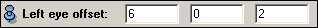

A Holobench (TM) - or dual-screen workbench - is a special display system consisting of two screens oriented perpendicular to each other. One screen is oriented vertically, the other one is oriented horizontally like a table. This provides a wide field display with more space free for hand interaction and manipulation as compared to a single-screen display. On a good Holobench there is almost no visible border between the two screens. Provided the observer's eye position is known, correct perspective views can be computed so that the displayed scene finally does not appear to have any break. However, in contrast to a single-screen workbench this is only the case for the tracked observer. Other spectators will more or less clearly notice a break.
In order to drive a workbench at least a stereo-capable dual-head graphics computer is required. In principle, two different settings are possible. Either, there is a big desktop and one half of it is output on a first channel and the other one is output on a second channel. Or, there are two independent graphics adapters (pipes) which are configured as two different X11 displays or as one display with two X11 screens. In the config file below we assume, that the desktop is split into two halves (left and right). An example of how to use a multi-pipe graphics computer is presented in the next section where a 4-sided CAVE configuration is described.
#Inventor V2.1 ascii
Separator {
SoScreen {
name "Vertical Screen"
lowerLeft 0 0 0
lowerRight 180 0 0
upperRight 180 110 0
upperLeft 0 110 0
channelOrigin 0 0
channelSize 0.5 1
cameraMode ACTIVE_STEREO
}
SoScreen {
name "Horizontal Screen (rotated)"
lowerLeft 180 0 0
lowerRight 0 0 0
upperRight 0 0 110
upperLeft 180 0 110
channelOrigin 0.5 0
channelSize 0.5 1
cameraMode ACTIVE_STEREO
}
SoTracker {
server "4147:4148"
autoConnect TRUE
wandTrackerId 1
headTrackerId 0
leftEyeOffset 6 0 0
rightEyeOffset 13 0 0
defaultCameraPosition 90 55 110
defaultObjectPosition 90 20 20
referencePoints [60 0 110,120 0 110,120 0 55,60 0 55]
}
}
In the two SoScreen sections of the config file the geometry of the Holobench is described by specifying the physical coordinates of the four corners of each screen. An arbitrary right-handed coordinate system with arbitrary units can be chosen. Here the coordinates are specified in centimetres and the origin was put in the lower left corner of the vertical screen. Notice, that the horizontal screen was rotated by 180 degrees with respect to the vertical screen. I.e., instead of the upper left corner the lower right corner of the horizontal screen is located at the origin. This is because the horizontal image of a Holobench is usually projected that way. If the corresponding lower scan-lines of the two images meet at the border between the two screens artifacts due to delayed response of the active shutter glasses are avoided. The fields channelOrigin and channelSize indicate that the graphics window for the vertical screen should be opened on the left half of the desktop, while the graphics window for the horizontal screen should be opened on the right half. Both windows are opened in stereo mode by default as specified by cameraMode.
In the SoTracker section of the config file the tracking system is
described. First the shared memory ids of the trackd daemon as specified
in the trackd.conf file are listed.
The syntax is Id-of-controller-reader:Id-of-tracker-reader.
For more information about
setting up trackd please refer to section 11.6.
The autoConnect field indicates that a connection to the trackd
daemon should be established automatically as soon as the configuration is
activated. wandTrackerId denotes the trackd sensor id of the 3D input
device. headTrackerId denotes the trackd sensor id of the head
sensor which is usually mounted at the shutter glasses. The fields
leftEyeOffset and rightEyeOffset specify the actual position of
the eyes with respect to the head sensor. Standing in front of the
Holobench the x-axis points horizontally to the right, the y-axis points
upwards, and the z-axis points towards the observer. In this case we assume
the head sensor to be mounted on the left side of the glasses since both
left and right eye have a positive offset in x-direction.
The VRSettings control module allows for interactive
adjustment of the eye offset.

The default camera position and the default object position both are specified in the same coordinate system as the screens. The default camera position is only used if the tracking system is disconnected. The default object position is the position where the scene is placed by default (or whenever a view all request comes from the viewer).
At the end of the config file four reference points are specified, namely four points on the horizontal screen. Before the configuration can be actually used, the tracking system has to be calibrated (see section 11.6). This is done by placing the input device at the reference points and clicking an input button. The reference points were chosen so that they can be easily accessed with the hand. In addition, it is important that the points are well inside the operating range of the tracking system. During calibration the raw coordinates of the wand sensor are displayed, so you can check if these values are reasonable. Once the tracking system is calibrated, the config file should be written by clicking the write config button of the VRSettings control module. The new config file will contain the same information listed above, but in addition it will also contain some calibration data, e.g., the transformation between raw tracker coordinates and screen coordinates.
{kind=link}
{kind=link}